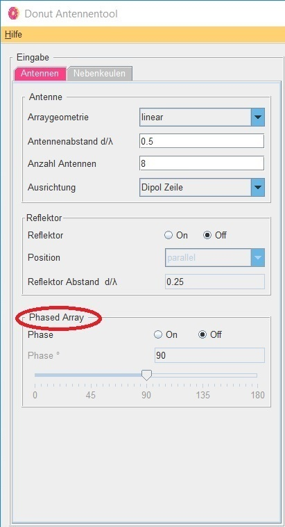

Donut Tutorial
Phased Array
 |
Ein weiterer Nutzen der Gruppenantenne liegt in ihrer Strahlschwenkung. Die Hauptstrahlrichtung lässt sich somit in verschiedene Richtungen einstellen. Die Antennen werden mit unterschiedlichen Phasenlagen eingespiesen. Somit wird die Abstrahlung mit einem entsprechenden Winkel geschwenkt. Konkret wird das Signal der Reihe nach zeitlich versetzt, in die einzelnen Antennen eingespiesen. Eine solche Art der Gruppenantenne nennt man Phased-Array-Antenne oder phasengesteuerte Antenne. Mit linearen Anordnungen, so wie sie in diesem Programm realisiert wurden, lassen sich Schwenkungen in horizontaler Richtung realisieren. Dies ist jedoch nicht unbegrenzt möglich. Durch hohe Schwenkungen steigt die Grösse der Nebenkeulen und die Hauptrichtung verliert an Effektivität. |